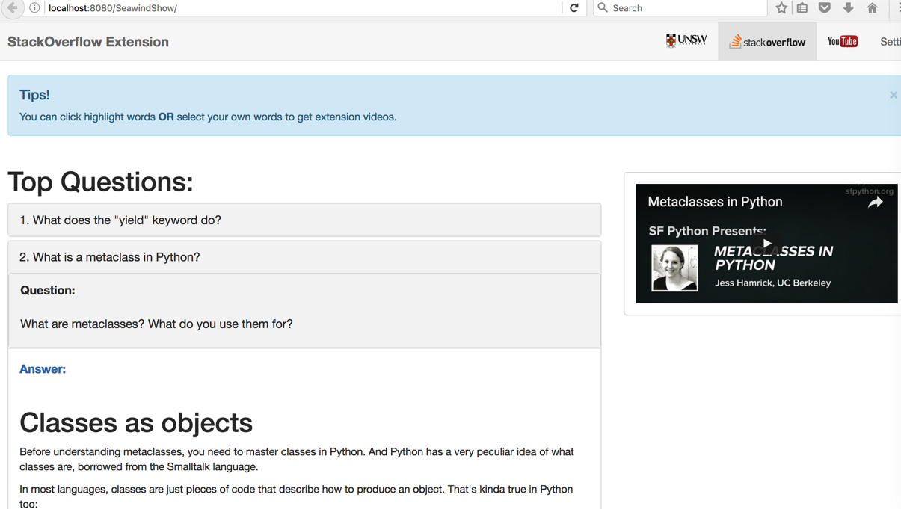

Requirments
Project is devided into two parts which are back end part and front end part for demonstration.
To run back end part you need these tools blew:
1. JAVA 1.8
oracle JAVA 1.8 »
2. Python module
python3.x »
3. Mysql
Mysql »
2. Python module
python3.x »
3. Mysql
Mysql »
3. Mysql
Mysql »
To run the sample front end view you need tools blew:
1. Maven installed in eclipse
Maven »
2. Tomcat 8.0
Tomcat 8.0 »
Steps for sample webpage view
Note: Before view you need install several python package which shows in the backend section. (3.Install python module)
1. Maven installed in eclipse
Maven »2. Tomcat 8.0
Tomcat 8.0 »Steps for sample webpage view
Note: Before view you need install several python package which shows in the backend section. (3.Install python module)
1.Download sample web app Maven project named "project_front_end_maven.zip"Github project repostory »
2.Import into eclipse as a Maven project
3.Get the tomcat server running
4.Run the project on server
First update and then install the project as show blew:

Run on the tomcat 8.0 server
The web url is "http://localhost:8080/SeawindShow" if the default tomcat server address is used.
The page shows several top questions from Stack Overflow for demonstration:
Viewing question and answers by clicking on each question. Answer is shows right after question and a video related to it will show on the right side by clicking on Answer in blue.

Steps for back end installation
1.Installation
This project can be used for other purpose and view the source code. Our project source code is published on the github, also the packaged jar file and python script.
Make sure download all the files and put them in one folder.
2.Initialize Database
We use a simple mysql database.
1.You should import the sql file (comp9323.sql) to your MySQL database first.
To import sql file to your MySQL database, simply type command as follow:
>>mysql -u Your_username -p -h localhost Your_Database_Name < comp9323.sql
3.Install python module
Before we update the database, we need do several things to make sure the environment is setted in the right way.
1). Install python modules (pymysql,requests,apiclient)
To install pymysql and requests, simply run these simple commands in your terminal of choice:
>> pip install pymysql
>> pip install requests
>> pip install --upgrade google-api-python-client
(Note: You should make sure the 'pip' command under python 3)If you cannot use 'pip' command for some reasons, you can try (under Mac os):
>> brew install pymysql
>> brew install requests
>> easy_install --upgrade google-api-python-client
2.update database
After you have all the python package installed. We can start excuting the jar file as typing the following code:
>>java -cp StackOverflowExtension-0.0.1-SNAPSHOT-jar-with-dependencies.jar au.edu.unsw.ee.stackoverflowextension.updateDatabase
3.Results view
After step 2, the program has already updated the database and store the details into a folder named "test". This folder contains 5 types of file:
1. Files end with "q" store the question.
2. Files end with "a" store the answer.
3. Files end with "o" store the orignal answer.
4. Files end with "u" store the url .
5. Files end with "key" store the key phrases.
Their name such as 0,1,2... indicate the id of the questions in database.